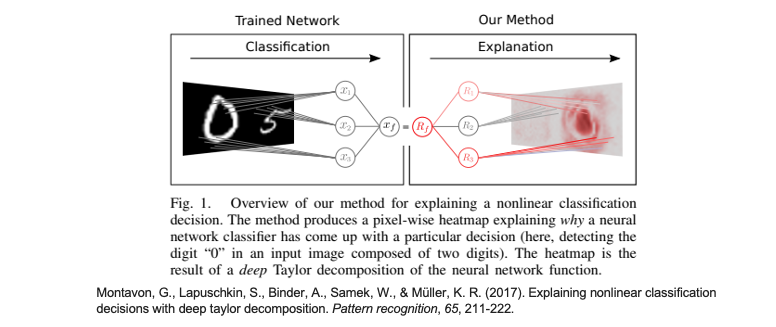
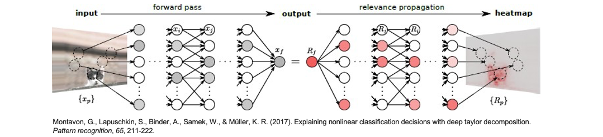
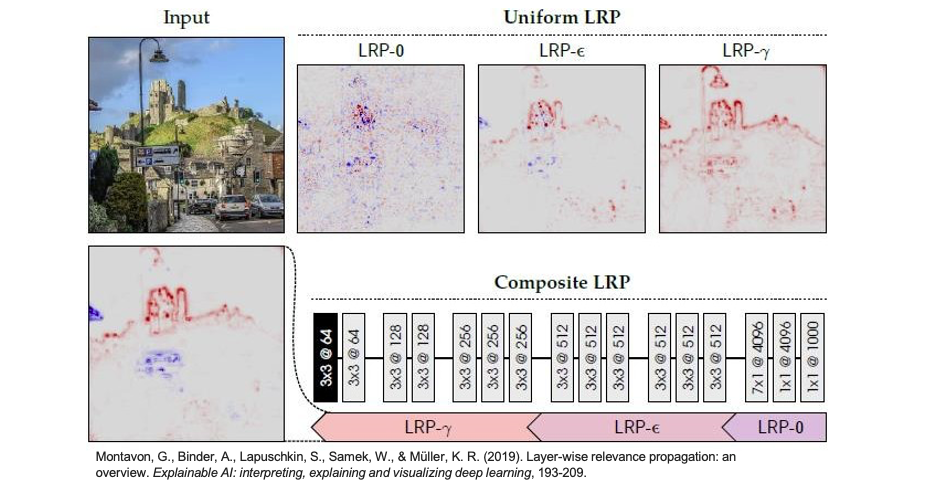
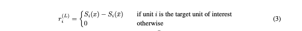

[Day 21] Propagation-Based：探索反向傳播法的可解釋性
今天所要談 Propagation-Based 方法在 CNN 中的作用是透過計算梯度、反向傳播或不同層的特徵來量化每個像素或特徵對預測結果的影響。
從昨天的 Gradient-based 方法我們了解到，可以使用梯度來估算每個輸入圖片的像素與最終分類結果之間的關係。換句話說，透過計算每個輸入圖片像素對於最終預測結果的影響，我們可以瞭解它們對於分類標籤的預測的貢獻程度。最終這些貢獻的總和等同於該圖像對於分類結果的預測。事實上這個概念可以在 CNN 的每一層都應用，即推斷每個特徵圖中的特徵與最終結果之間的相關性。這使得我們可以從最終輸出層開始回溯，而不僅僅針對輸入層計算梯度。以下為各位整理兩篇著名的 Propagation-Based 相關文獻：
- Layer-wise Relevance Propagation (LRP) (Bach et al., 2015)：透過泰勒分解來反向傳遞神經網路，以達到識別重要像素的方法。
- DeepLIFT(Shrikumar et al., 2017)：是一種改進的反向傳播算法，用於生成熱圖以顯示神經網路的特徵重要性。SHAP 套件中的 Deep SHAP 就是基於 SHAP 和 DeepLIFT 算法。
Layer-wise relevance propagation
Layer-wise relevance propagation 是一種 Propagation-Based 方法的實例，用於理解深度神經網路對輸入數據的預測是如何形成的，並將其分解成單個輸入維度的相關性分數。這可以幫助我們理解神經網路中哪些部分對最終預測貢獻最大，對於模型的解釋和可解釋性非常有用。該方法被擴展到處理卷積神經網路中的特殊非線性操作，以更好地理解這些網路的工作原理。

從下圖可見，左側輸入一張圖片，經過網路中的一系列神經元計算後得到輸出結果 xf。這個輸出 xf 等同於 Rf，實際上是每一層的特徵經過相關性計算後總和的結果。因此右側的部分表示從輸出結果開始，透過層層傳遞，將重要訊息回饋到最初的輸入圖片中。

- Input: 輸入是一張圖像，其中包含像素值 {xp}，這些像素值表示了圖像中的特徵。
- Forward Propagation: 將像素值 {xp} 通過神經網路進行正向傳播。在神經網路中，經過多個層次的計算，獲得一個得分 f(x)，該得分指示了類別
貓的存在。這個得分是由輸出神經元 xf 表示的，xf 的值編碼了圖像中是否包含貓的訊息。 - Relevance Calculation: 接下來，計算輸出神經元 xf 的相對重要性（relevance），這個相對重要性記為 Rf，通常是 xf 的值本身。這表示輸出神經元對於類別
貓的存在有多大的貢獻。 - Backpropagation of Relevance: 從頂層開始，將相對重要性 Rf 進行反向傳播，傳播到較低的層次。這些相對重要性（Rp）被分配給了所有像素 {xp}，表示了它們對於最終類別分類的貢獻。
- Relevance Redistribution: 最低隱藏層的最後一個神經元被認為對於更高層次的重要性較大，因此它將其分配的相對重要性重新分配到像素上。換句話說，這個神經元將影響圖像中某些特定區域的相對重要性。
- Heatmap Generation: 通過以上步驟，得到了像素 {xp} 的相對重要性 heatmap，這個熱圖顯示了圖像中哪些區域對於最終類別分類更加重要。熱圖可用於可視化模型對圖像的關注點，以及在圖像中哪些區域包含了有關類別
貓的訊息。
我們可以發現 LRP 方法主要是從最終輸出層逐步追溯到輸入層，逐層理解前層重要的神經元是如何影響輸出的，以此來獲得解釋性。下面公式 Ri 就是第 i 層節點的 Relevance，要計算它就是 Rj 第 j 層所有節點的 Relevance 並乘上一個權重，這個權重就是 xi 節點經過計算往下一層傳遞的數值。

以下這三種不同的 LRP 規則是用來調整相對重要性在不同神經網路層次之間的傳播方式。它們有助於解釋模型的預測，並提供了對模型中不同層次神經元貢獻的不同理解。根據神經元所在的層次，選擇適當的 LRP 規則可以更好地理解模型的工作原理。
1. Basic Rule (LRP-0):
 應用層級: LRP-0 主要用於深層神經元，即神經網路中較高層次的神經元。
應用層級: LRP-0 主要用於深層神經元，即神經網路中較高層次的神經元。
運作原理: 在 LRP-0 中，相對重要性（relevance）會傳遞到較低層的神經元，而且傳遞的方式是基於某種權重分佈的。這種權重分佈可以基於神經網路的結構和連接來計算，以確保相對重要性能夠合理地傳遞到較低層的神經元，間接提高了較高層次的貢獻。
2. Epsilon Rule (LRP-ε):
應用層級: LRP-ε 通常應用於中層神經元，即神經網路中處於中間位置的神經元。
運作原理: 在 LRP-ε 中，相對重要性會以更平均的方式傳遞到較低層的神經元，不像 LRP-0 那麼專注於少數高度相對重要的神經元。這種方法有助於平衡訊息的傳遞，以更全面地考慮中間層次的貢獻。
3. Gamma Rule (LRP-γ):
 應用層級: LRP-γ 通常應用於較淺層的神經元，即神經網路中較低層次的神經元。
應用層級: LRP-γ 通常應用於較淺層的神經元，即神經網路中較低層次的神經元。
運作原理: LRP-γ 會更強調相對重要性在較低層神經元之間的分佈，這意味著相對重要性會更加集中於較低層的特定神經元。這有助於解釋模型為什麼會對某些輸入特徵產生強烈的反應，並且能夠將模型的決策過程更清晰地關聯到較低層次的特徵。
實驗結果
讓我們來觀察不同計算方法對最終解釋性的影響。在下圖中，紅色的點代表對辨識結果有正向幫助，而藍色的點則代表有負向的影響。我們也可以觀察到以下情況：當使用 LRP-0 時，產生了相當多的雜訊；LRP-ε 的效果看起來相對不錯，並且減少了雜訊點的出現；而最右邊的 LRP-γ 則沒有出現對辨識結果有負面影響的點，因此沒有藍色點。最後論文又提了一種方法是在神經網路中依據不同層使用不同的計算方法，其中在最後的全連階層使用 LRP-0，在深層取得比較多特徵的地方使用 LRP-ε，在淺層的地方使用 LRP-γ。最終的結果看起來遠比三個單獨使用效果顯著。

各位可以試試看這個互動網站，裡面實現了 LRP 方法，並可以調整參數控制解釋性。

DeepLIFT
DeepLIFT 是一種反向傳播的方法，類似於 LRP。每個單元 i 都被分配一個歸因值，表示該單元對於原始網路輸入 x 的激發相對於某個參考輸入 x̄ 的相對效應。可以參考下方公式3：

對於所有隱藏層單元，參考值 z̄ji 是通過對網路進行前向傳遞，使用基準輸入 x̄，並記錄每個單元的激發數值來確定的。與 LRP 一樣，基準通常選擇為零。相關性傳播過程可以通過下方公式4描述。
簡單來說 DeepLIFT 理論的核心概念是將模型的輸入特徵歸因到每個特徵的貢獻度，以解釋模型的預測過程。如果要實作 DeepLIFT 可以參考原始論文在 GitHub 的開源套件 DeepLIFT: Deep Learning Important FeaTures。此外在 SHAP 套件提供的 DeepExplainer 解釋方法就是 DeepLIFT 和 Shapely values 的結合。詳細的實作內容可以參考 [Day 17] 解析深度神經網路：使用Deep SHAP進行模型解釋。